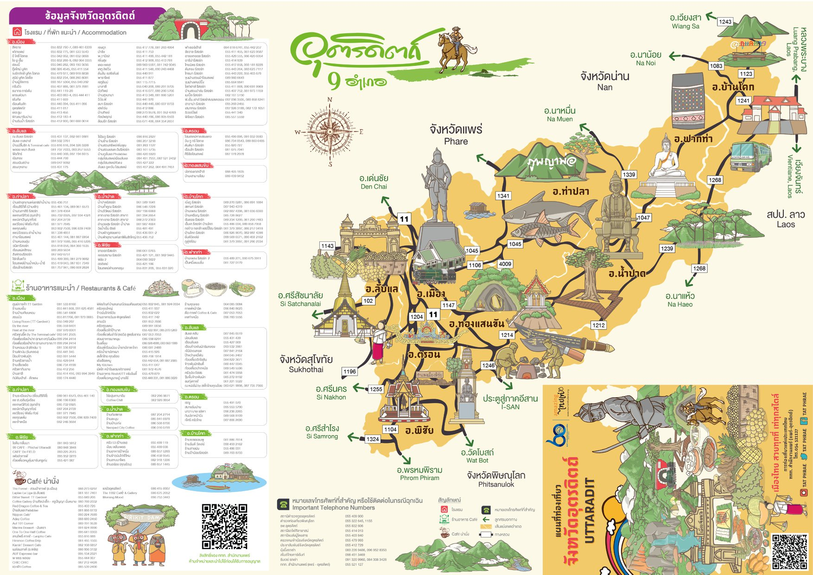

รู้จักกับอุตรดิตถ์

อุตรดิตถ์ เป็นจังหวัดหนึ่งทางภาคเหนือตอนล่างของประเทศไทย
มีประวัติศาสตร์ยาวนานและสถานที่ท่องเที่ยวทางธรรมชาติที่อุดมสมบูรณ์
สิ่งที่คุณไม่ควรพลาด (Highlights)
- ผลไม้ขึ้นชื่อ: ทุเรียนหลงลับแล-หลินลับแล, ลางสาด, สับปะรดห้วยมุ่น
- ธรรมชาติ: อุทยานแห่งชาติภูสอยดาว, ต้นสักใหญ่
- ประวัติศาสตร์: บ้านเกิดพระยาพิชัยดาบหัก, บ่อเหล็กน้ำพี้
- วัฒนธรรม: ประเพณีแห่น้ำขึ้นโฮง, งานเทศกาลลางสาด